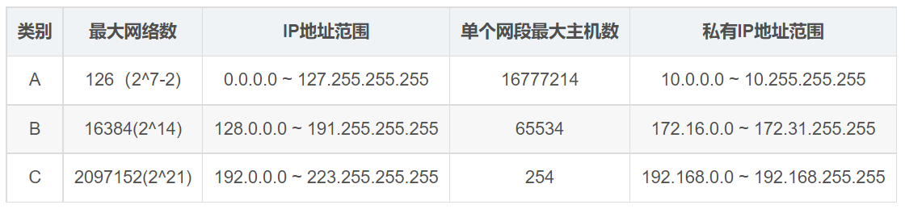

计算机网络知识梳理
协议总结
数据链路层：
MAC: 介质访问控制(medium access control)
Goback N:回退n帧协议
SN:选择性重传
介质访问控制子层：
ALOHA：想发就发，随机时间后重传
时隙ALOHA(分槽ALOHA)：只在时间片开始时发送/重传
CSMA：载波监听多路访问协议，先听后发
1-坚持：信道空闲马上发，信道忙继续坚持监听
非坚持：信道空闲马上发，信道忙放弃监听，随机事件后再监听
p-坚持：信道空闲p概率马上发，1-p概率下一个时隙再发,如果下一个时隙空闲，仍然概率p发送，1-p推迟…
CSMA/CD：载波监听多路访问/碰撞检测协议
先检测是否空闲,边发送边监听，如果冲突就停止
CSMA/CA：载波监听多路访问/碰撞避免协议 ,是802.11 MAC 子层协议的核心协议
用于无线网络，先检测是否空闲，如果空闲则发送RTS,接收方返回CTS，预约信道开始发送，接收方收到后响应ACK
MACA 冲突避免多路访问 有RTS,CTS
MACAW: MACA for Wireless，无线的MACA（MACA：Multiple Access with Collision Avoidance ，避免冲突的多路访问）。
网络层：
路由算法：
DV:距离矢量路由算法
只与邻居节点交换信息，存到目标节点的最短距离和下一跳
LSP:链路状态路由算法
泛洪，每个节点知道完整的网络拓补图
内部网关协议：
OSPF：开放最短路径优先协议，使用LSP算法
使用洪泛法向自治系统内所有路由器广播链路状态，采用IP
OSPF属于网络层（考研大纲）还是传输层有争议
网络层控制协议：
ICMP:网络层控制协议报告差错和异常情况
其他:
RED：网络层拥塞控制协议，超过某个阈值时路由器随机丢弃一小部分数据包
CIDR：不分abc类划分子网
NAT：网络地址转换，自治系统内外使用两套ip地址
ARP:完成主机或路由器ip地址到mac地址的转换
DHCP：局域网中DHCP服务器动态给主机分配ip地址、子网掩码等等
传输层：
UDP：不可靠，无连接，适用于传输小文件
TCP：可靠，面向连接，适用于传输大文件
应用层：
内部网关协议：
RIP:早期的域间路由协议，使用DV算法
外部网关协议：
BGP：不同自治系统之间交换到达某自治系统要经过的路径，采用TCP
其他：
DNS：域名系统
HTTP:超文本传输协议，浏览器向万维网服务器请求万维网文档
一些其它概念
1db（分贝）=10log10S/N（以10为底对数）
(每秒 2B 次采样)最大数据速率=2Blog2V（比特/秒）
最大数据传输率=Blog2(1+S/N)（比特/秒）
AP:Access Point接入点，如无线路由器，基站
Internet：由网络通信设备、通信线路及基于共同通信协议TCP/IP的多个计算机网络系统互联而构成的全球性计算机网络，是无特定网络疆界的网络互联的集合。
计算机网络的目的：资源共享 （和数据通信）
NRZ:低电平表示为 0，高电平表示为1
NRZI:0 时信号不发生变化，1 时信号跳变
曼彻斯特：码元中间的跳变，高到低为1，低到高为0，码元开始是否跳变来调整
差分曼彻斯特：码元开始的跳变，有跳变为0，无跳变为1，码元中间一定跳变
IEEE 802.3 ：以太网介质访问控制协议 （CSMA/CD）及物理层技术规范
IEEE 802.11：无线局域网（WLAN）的介质访问控制协议及物理层技术规范
IEEE 802.15：采用蓝牙技术的无线个人网（Wireless Personal Area Networks，WPAN）技术规范
IEEE 802.16：宽带无线连接工作组
IBA:因特网体系结构委员会
IETF:因特网工程任务组
RFC上升为因特网正式标准：因特网草案、建议标准、草案标准、因特网标准
ATM:异步传输模式(Asynchronous Transfer Mode)
PDU协议数据单元：物理层的 PDU是数据位（bit），数据链路层的 PDU是数据帧（frame），网络层的PDU是数据包（packet），传输层的 PDU是数据段（segment），其他更高层次的PDU是数据（data）
邮件系统使用的协议：SMTP、IMAP、POP
如果IP数据报不分片，分片标志DF（Don’t Fragment）会被设置为1。分片标志MF（More Fragment）设置为0。
典型问题
哪些ip可以分给主机？

在一个总线拓扑结构的以太网中，有A、B、C、D四台主机，若A向B发送数据，则（ ）
四台主机都能收到数据 例如载波监听碰撞检测：边发送边监听